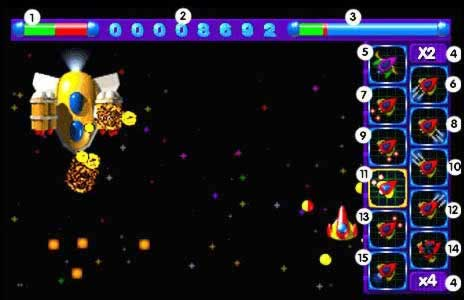

|
 |

|
|
|
|
|

01 : Jauge de vie du gardien
02 : Score du joueur
03 : Jauge de vie du joueur
04 : Scores multipliés par 2x ou 4x
05 : Changement de vaisseau
06 : Tir arrière force 2
07 : Tir arrière force 1
08 : Tir droite force 2
09 : Tir droite force 1
10 : Tir gauche force 2
11 : Tir gauche force 1
12 : Tir avant force 2
13 : Tir avant force 1
14 : Permet de remonter la jauge de vie du joueur.
15 : Amélioration de la vitesse
Le niveau d’énergie restant est en vert (repère 1 et 3).
L’option pouvant être achetée est entouré en jaune (ici repère 11).
|
|
|
|